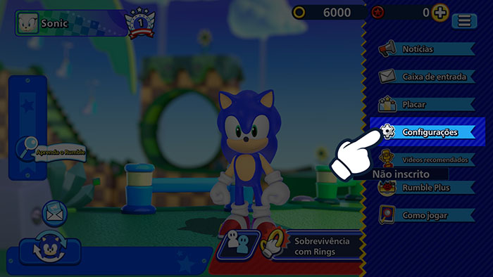
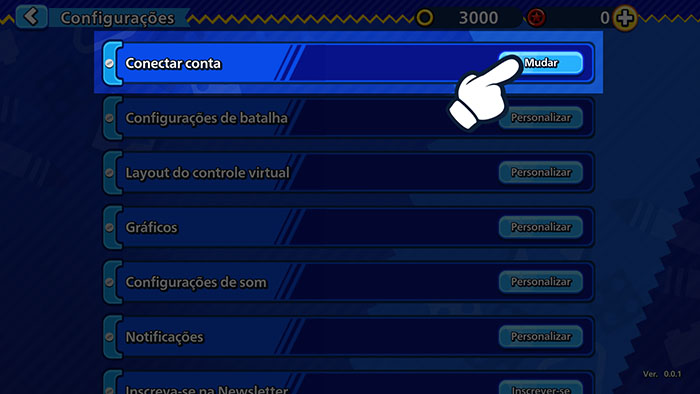
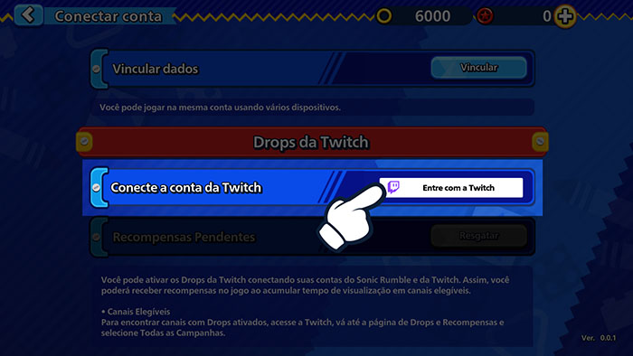
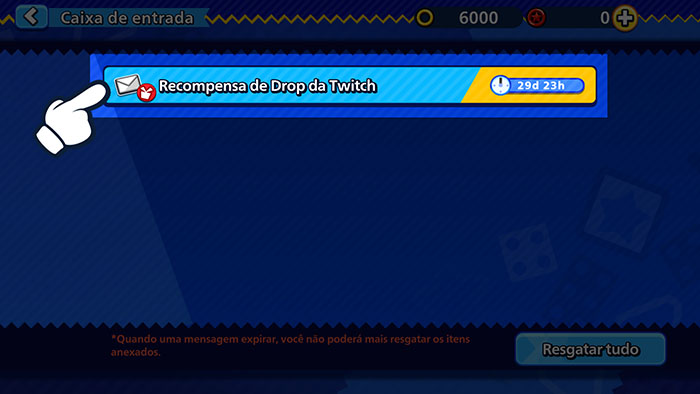

Twitch Drops¡Mira transmisiones en vivo y consigue recompensas en el juego!
Twitch Drops¡Mira transmisiones en vivo y consigue recompensas en el juego!
¡Vincula tu cuenta de Twitch ya!
Cómo vincular tu cuenta
1Haz clic en el botón de Menú en Sonic Rumble.

2Ve a Configuración.

3Haz clic en Vincular cuenta.

4Selecciona Twitch Drops y elige Iniciar sesión con Twitch para acceder a tu cuenta de Twitch.

5Esto vinculará tu cuenta de Twitch a tu cuenta de Sonic Rumble.
Cómo aceptar recompensas
1Haz clic en el botón de Menú en Sonic Rumble.

2Ve a tu buzón para ver tus recompensas.

*Puede ocurrir un problema al conseguir las recompensas si se envían a tu buzón durante el mantenimiento.
Si esto ocurre, ve a Menú > Configuración > Vincular cuenta > Twitch Drops y haz clic en el botón Reclamar para reenviar las recompensas a tu buzón.
Preguntas frecuentes
- Q¿Qué son los Drops de Twitch?
- AUn tipo de evento que te permite ganar recompensas en el juego solo por ver transmisiones en vivo en Twitch.
Puedes participar al vincular tu cuenta de Sonic Rumble con tu cuenta de Twitch. - Q¿Cómo puedo recibir recompensas?
- AActiva la función de Twitch Drops y mira transmisiones en vivo de Sonic Rumble que cumplan las condiciones para llenar tu indicador de Drops. Puedes recibir recompensas después de que el indicador esté lleno.
- Q¿Cómo puedo ver si estoy participando en eventos de Twitch Drops?
- AAccede aquí a la página de inventario de Twitch para revisar todos los eventos de Twitch Drops en los que estás participando y las recompensas que has recibido.
- Q¿Cuánto tiempo tardan en llegar las recompensas de Drops?
- ALas recompensas se envían a tu buzón del juego en un plazo de 24 horas.
Si deseas desvincular tu cuenta después de recibir tus recompensas, recuerda reclamar las recompensas en tu cuenta de Sonic Rumble antes de hacerlo. - QSi tengo varias cuentas de Sonic Rumble, ¿puedo reclamar recompensas en todas ellas?
- ALas recompensas de Twitch Drops solo se pueden reclamar una vez. Solo puede vincular a una cuenta de Twitch a Sonic Rumble a la vez.
No se puede reclamar el mismo tipo de recompensa más de una vez para cada cuenta de Sonic Rumble y de Twitch.